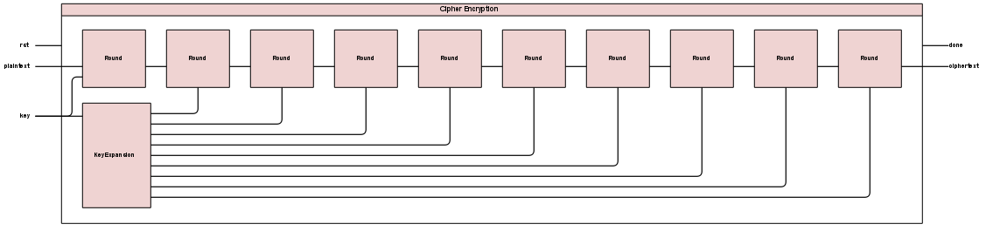
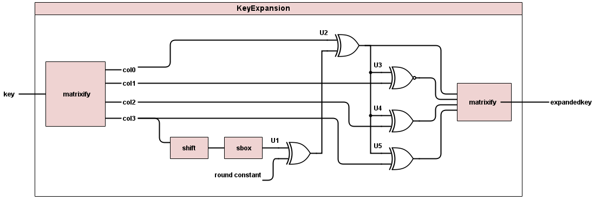
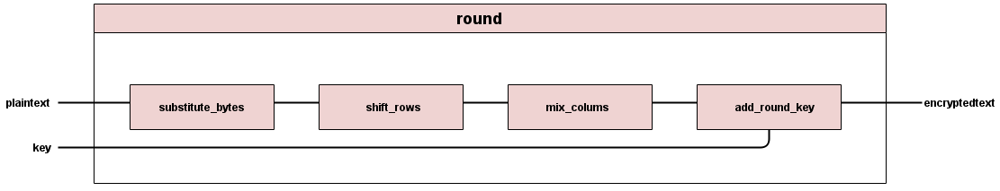
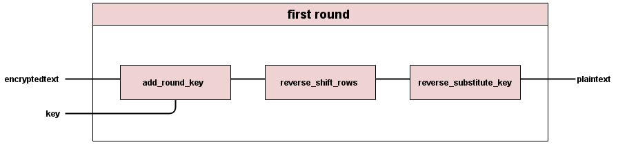

Instructions
A step-by-step guide to AES implementation in Verilog
Get ready to learn because here comes the knowledge!
To understand how to implement AES in verilog, first you must learn how AES works!
Please see our "What is AES" page for more info about this.
Alrighty! So now that you know how AES works, here is how to implement it in Verilog.
We created an overall encryption module, "encryptor.v" and an overall decryption module, "decryptor.v".
Encryption
Let's start by talking about how we implemented encryption.
The encryption module takes two inputs: a 128bit message and a 128bit key. It outputs the ciphertext, and a "done" flag that is set to high when encryption is completed. Within the encryption module, we instantiated instances of all the other modules we created for encryption.
Key Expand
The first one that is called is the key expand module: "key_expand.v". The input to this module should be the same 128bit key that was the input to the overal encryptor module. It should output 10 new keys to be used for rounds 1-10 of the encryption. The block diagram below illustrates how key expand should work. For many of the operations you will perform on your key, it makes sense to have it in a matrix format. Use behavioral verilog assign statements to break your 128bit key into a matrix of 16 bytes, made up of 4 byte columns. To see how we did this, check out "matrixify.v". Use behavioral verilog assign statements to move the top byte of the last column to the bottom of that column. Shift the rest of the bytes up when you do this. After the bytes have been shifted, this column must be passed through the substitue-byte box, also known as "s-box". Create a separate verilog file for you sbox. There are two options for how to implement this in verilog.
Option 1: Perform two functions Gallois Field Matrix Multiplication on your key. First find the inverse of your matrix of bytes, and then use Gallois Field GF(2^8) matrix multiplication to perform the equation below.
| 1 | 1 | 1 | 1 | 1 | 0 | 0 | 0 |
| 0 | 1 | 1 | 1 | 1 | 1 | 0 | 0 |
| 0 | 0 | 1 | 1 | 1 | 1 | 1 | 0 |
| 0 | 0 | 0 | 1 | 1 | 1 | 1 | 1 |
| 1 | 0 | 0 | 0 | 1 | 1 | 1 | 1 |
| 1 | 1 | 0 | 0 | 0 | 1 | 1 | 1 |
| 1 | 1 | 1 | 0 | 0 | 0 | 1 | 1 |
| 1 | 1 | 1 | 1 | 0 | 0 | 0 | 1 |
| a7 |
| a6 |
| a5 |
| a4 |
| a3 |
| a2 |
| a1 |
| a0 |
| 0 |
| 1 |
| 1 |
| 0 |
| 0 |
| 0 |
| 1 |
| 1 |
Option 2: Find a lookup table of s-box values online and implement that in behavioural verilog, such that to perform the s box operation you just grab the right value from the lookup table.
Next the output from the sbox is xor'ed with a round contstant that is different for each of the 10 rounds.
Finally all of the columns are xored with either another column or the output from the xor'ed sbox. Finally, the output goes through matrixify to turn it back into a matrix.
For our project, we ran key expand 10 times so that each round would have the necessary key. We then outputted each of these key expansions to the proper round.
Round
Next up is the round module, in round.v. This module executes one round for the AES algorithm.  Each round in encryption except the final one consists of 4 operations. The first is substitute bytes, the same sbox operation as described above.
Decryption
Now let's talk about how we implemented decryption.
The decryption module takes two inputs: a 128-bit encrypted message and a 128-bit key. It outputs the plaintext, and a "done" flag that is set to high when decryption is completed.
Within the decryption module, we instantiated instances of all the other modules we created for decryption. We first call the Key Expand module to get all ten keys that we needed for each reverse round which is shown below.
We then initiate the first round where it's the same as reverse round but without reverse mix columns. The schematic of the first round is shown below.
We then call the reverse round module nine times to further decrypt the messege. The last step in decryption is to xor the decrypted text out of the ninth reverse round with the round key.